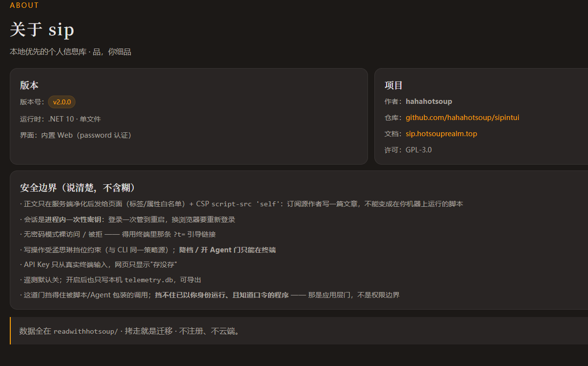
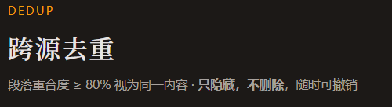

学习大好
可能你现在也和我一样，手头有一大堆事情要去忙
俺也一样
我到现在国庆作业还有一大堆没写，简明哲学的下一篇还没出稿，然后还有一个代码项目半路夭折
对 忙的要死 就是不知道在忙什么
所以，你要是愿意停下来看会这篇文章，万分感谢
毕竟，你现在这么漫无目的地翻，倒不妨来看看这篇
好老师？
现在对ai依赖太深了，可以说是，每一天有几小时的时间，都在和ai对话
确实是，只有ai愿意陪我聊一些问题，比如说涉及政治的 意识形态的 这些东西和真人去聊基本就是找骂
然后 慢慢可以算是种依赖了吧 包括说dsh桌面端推出来了 我倒是蛮喜欢让ds去帮我写点东西，比如说文章，代码
或许就是新鲜劲吧 本来就有点代码基础
所以让ai帮我实现想法 我来审核提交
一天几个小时过去 我还是蛮开心的
问题是到了后期
ds的口癖真的很严重，举个例子：
他非常喜欢在文章里使用“你”“我”这样的主语，对话感太强了，反而在文章创作的时候让读者倍感压力
这点claude做的真的很好，claude的人文推理可以说是世界一流，而ds等等国模光顾着追逐代码能力，这方面反而原地踏步了，我不好说这是不是一件坏事，但是【简明哲学|矛盾篇】使用矛盾分析法为思考减负这篇文章，claude改的远比ds更有文学气息，也更符合文学的审美
实现网页功能的时候，也经常加一些奇怪的提示语


（着重去看标题下的，和单独代码块的内容，你可以试着想一下，我平时用程序的时候真的需要看这些内容吗？）
不只是说实用性上的审美体验，更恐怖的是，到了后期的开发，我没办法掌控ds了
因为fts，程序优化，加固，这些东西对一个小白来说不可能想得到
就经常让ds帮我去找更好的方案，上面那些我从未听过，是ds告诉我的
所以用着用着，就成了
ds写代码，我点击确认就好了
vibecoding变味了，到头来我还是什么都没学到，手解放了，思绪没解放，以前是b站推送把我的思绪填满了，现在是ds把我的思绪填满了
然后我还是啥也没学到
同时也发现，到了后期，开发越来越成为了一种焦虑
一是为了实现你的想法，你的大脑里就充斥着“哎呀，这个还没做”
二是，互联网上同龄里比我强的太多了，姑且不谈那些体育，信息学竞赛的大佬们，就开发游戏的，小程序的，写小说的，比我强的人，大有人在
三是，我做的事情，别的人一定做过了，那我的创新点在哪？
久而久之，开发活动会变得快的离谱，但这是牺牲了审美和使用体验换来的，仅仅保证了功能的实现
最恐怖的是
如果就这样过了三个月，我依然什么都没学会
如果大学期间一直在使用ai呢？
大学四年，知识长进了多少呢？
在别人弯道超车的时候熄火
但我依然感谢ds，并且，我决定停掉一切项目，专注于手上有的这些
专注写作，然后把已有的项目代码全部啃完，这就是我想做的
ds让我看到了，我没能达到的高度是如何的
那接下来应该依靠我自己了，先把有的代码啃完好了
或许就是，很多的压力，是我自己给的
为什么小时候，孩子就觉得自己像是飘飘然呢
不用去考虑远方那么多，未来是很模糊的，现实也是，学知识真的是一件很快乐的事情，快乐到想跟老师家长看自己的成果，快乐到想给大家看看自己算数时的一点小巧思
现在呢
我翻着手机，却觉得刷到的东西都好无聊
为什么一个十岁的孩子，要去感同身受一个二十、三十、四十岁的人的悲欢离合
这太奇怪了
而一个未成年的少年，没有对知识的渴望，早早的对这个世界感到失望
这太奇怪了
停下吧
马吃多了草，也得吐槽
草根出身
仔细思考了一下，为什么写文章，写代码
其实本质就是学习
看着自己不断积累一点一滴，学会各种东西，这就是一种激励
能让我去潜下心学习
或许这个赛道上有很多的人，他们有的已经接近终点，或者已经双脚踏上领奖台
但这，和我有什么关系呢
你比我多活了这么多年，拿点奖又如何
比我少活的，算你牛逼
但至少我之前，刚做博客的时候蛮开心的，上线个网站就能高兴好久
因为那是正常的学习曲线，更何况是在课外
你天天学代码编程，一天20个编译报错，就这劝退程度，你还能学的进去嘛
更何况是在课余时间
就这样渐渐去做，学习是激励式的，可以看到实在成果的
这不挺好
做想做的事情吧
学习其实是一件很快乐的事情，不是让你一边玩一边学
而是，学习到新知识的时候，就很快乐
不拘泥于课本，而是你想学的知识
厌学，很正常，讨厌老师的臭脸，讨厌级部爹腔娘调的被动式感恩
但这并不意味知识就一定是无趣的
相反的是，学习，真的很快乐
你可能会为了一首诗的用词琢磨好久，
或者是为了理解哲学“渐进性与飞跃性”死记硬背
亦或为了学习机器学习死磕minimind，即使毫无基础
然后发现
写诗不过是情感驱动，没情感，没精力，没墨水，写啥诗
哲学，晦涩难懂的名词，放在生活就是“接受一时的挫败，逐渐成为理想的自己”
模型，不过是把显卡分成好几个车间，让每个车间算出应该有的数据
把知识转成自己理解的样子，真的很爽
就像是，看着一个孩子，逐渐长大
这是你的杰作
你学到了
一点小想法
老实讲，如果能有更小的孩子读到这篇文章，希望他能珍惜那段自由探索的时间，在试错成本最低的时候，可以感受到知识的甘甜
如果是比我大的人，我不知道该说什么，只是想说，我翻到的那些四十岁的悲欢，大概是你们的
我没能替你们扛，但我看见了，你们好棒
但无论你多大
欢迎来和我聊天，发邮件来，无论是倾诉又如何，都可以的
最后一句，给所有人：
学习本来是一件快乐的事
如果你觉得不快乐了，不一定是你的问题，那就停一下，换条路，找回那种“把知识变成自己理解的样子”的爽